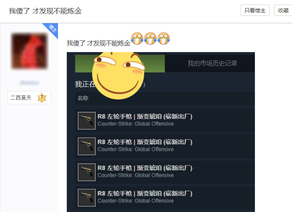
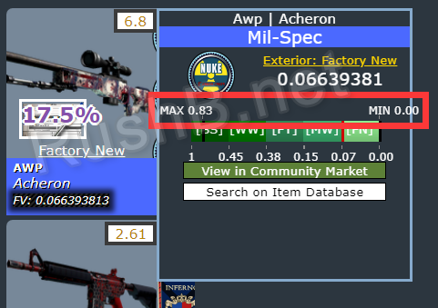
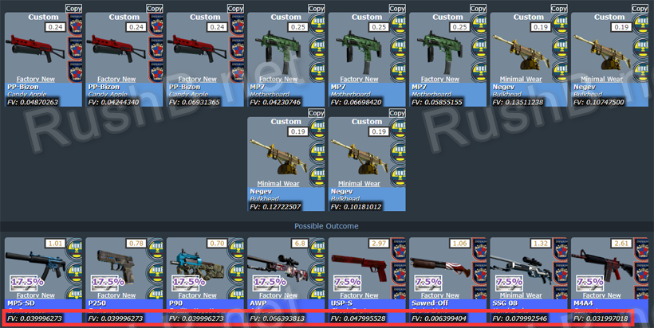
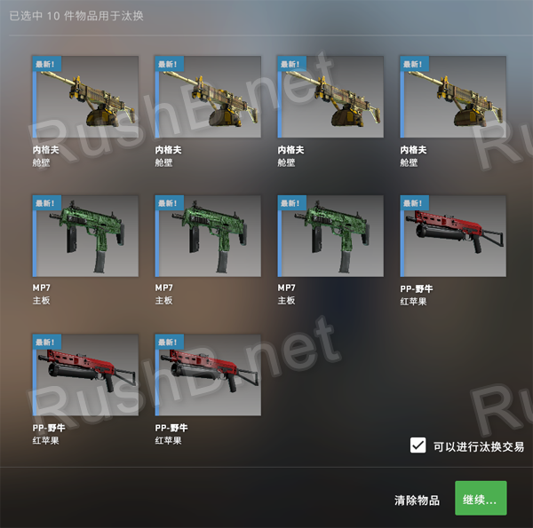
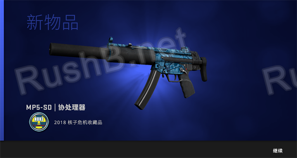

CSGO RushB中文网
CSGO RushB中文网
本文将为新手玩家详细科普CSGO汰换合同，即将10件同级武器皮肤合成1件高一级的皮肤，俗称“炼金”、“合枪”，让玩家清楚了解其原理，而不在花冤枉钱购买无法汰换的皮肤，并且提供的汰换合同概率磨损计算模拟器能够让玩家清楚知道合出结果。
本教程并不是教大家如何通过汰换合同赚钱，而是为那些自学成才的炼金大师讲解汰换合同原理，下方所举的例子仅用于讲解。
新手常见的错误，就是购买了错误的原材料，由于汰换1次需要10件皮肤，大部分玩家花了不少钱才发现无法合成，一买一卖，让G胖赚了不少手续费。

汰换合同基本原理
10件同品质、同种类（纪念品除外）、且非收藏品最高级的皮肤才可用汰换合同，合成结果取决于这10件原材料的收藏品。
- 同品质：指相同皮肤等级的皮肤，比如10件军规级、10件受限级等。
- 同种类：除了纪念品，普通和暗金种类可以用于合成
- 非收藏品最高级：玩家最容易弄错的一点，CSGO收藏品中有些最高级只有保密或受限，比如湖畔激战收藏品最高的受限是双持贝瑞塔 | 钴蓝石英，该收藏品没有更高一级，所以无法用于汰换合同。
- 合成结果：如果10件原材料来自于10个收藏品系列，那么合出的皮肤会是这10个收藏品中随机一件，如果10件原材料中有多件来自同一收藏品，那么结果是该收藏品概率越大。
常见的不可炼金原材料：
- 双持贝瑞塔 | 钴蓝石英（湖畔激战收藏品最高级受限）
- Tec-9 | 晶红石英（列车停放站收藏品最高级受限）
- R8 左轮手枪 | 渐变琥珀（炙热沙城 II 收藏品最高级保密）
- MP5-SD（纪念品） | 小白鼠（纪念品无法用于汰换，而且是神秘小镇收藏品唯一一件皮肤）
- 等等
合成结果概率
上面说所，汰换合同的结果取决于10件原材料的收藏品的高一级皮肤有哪些。而原材料中同一收藏品不同皮肤不影响合成结果，不考虑磨损的情况下，玩家只要买便宜的即可。比如10件沙漠之鹰 | 手上加农炮和10件CZ75 自动手枪 | 复古圣杯都必定合出M4A1 消音型 | 骑士。
如果10件原材料来自同一收藏品，那么结果必定是该收藏品高一级的皮肤，而合出具体哪件皮肤取决于该收藏品高一级中有哪几件皮肤。
比如：
- 古堡激战收藏品隐秘级只有龙狙，那么10把M4A1 消音型 | 骑士（保密级）必定合出一把AWP | 巨龙传说。
- 而2018 炼狱小镇收藏品的保密级有两件，分别是SG 553 | 意式拉力和双持贝瑞塔 | 双涡轮，那么10件2018 炼狱小镇收藏品受限级各有50%的概率合出这两把皮肤其中一把。
如果10件原材料来自多个不同收藏品，那么结果则更加随机。
比如：
汰换合同中10件原材料来自3个不同收藏品，分别是
- 5件来自收藏品A，收藏品A高一级的皮肤有2件（皮肤A1、A2，各50%）
- 3件来自收藏品B，收藏品B高一级的皮肤有1件（皮肤B1，100%）
- 2件来自收藏品C，收藏品C高一级的皮肤有3件（皮肤C1、C2，C3，各33.3%）
那么合成结果的概率分别为：
- A1：5×50%÷10=25%
- A2：5×50%÷10=25%
- B1：3×100%÷10=30%
- C1：2×33.3%÷10≈6.7%
- C2：2×33.3%÷10≈6.7%
- C3：2×33.3%÷10≈6.7%
这里，推荐CSGO.exchange的汰换合同模拟器/计算工具，玩家能够按需选择不同收藏品的原材料，直接得出计算结果，并且按概率从高到低排序。另外，还支持磨损度计算，详细继续看本文下方。
汰换合同模拟器
本站在另一文章编辑了新CSGOFloat汰换合同/炼金模拟器介绍及使用方法，点击查看。
结果磨损计算公式
首先推荐浏览器插件CSGOFloat Market Checke，能够直接显示库存皮肤磨损，方便复制粘贴

首先，CSGO每种皮肤都有磨损度范围，比如高达AWP只有久经沙场、破碎不堪和战痕累累，磨损度范围则是0.18至1。

磨损度计算公式：
（合出皮肤的磨损度最高值-磨损度最小值）×10把原材料平均磨损值+合出皮肤最小磨损值
以我上图10把原材料为例，平均磨损值为0.07996，合出的结果有多种，其中AWP | 冥界之河的最高磨损值为0.83，最小磨损值为0，那么如果能合出这把AWP，则磨损度为0.0663

通过上面提供的汰换合同模拟器，输入原材料的磨损，我们可以直接得出各个结果的磨损值。如你所见，除了SSG08是略磨，其他结果均为崭新，所以我们不一定要买10把崭新皮肤，也有概率合出崭新。
当然，模拟归模拟，最终还是要实际为准，汰换合同和开箱一样，也是看脸的，只不过可以通过计算概率和原材料价格尽可能的出最好的炼金配方。

